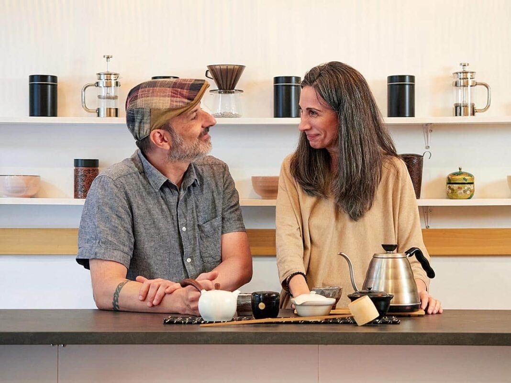
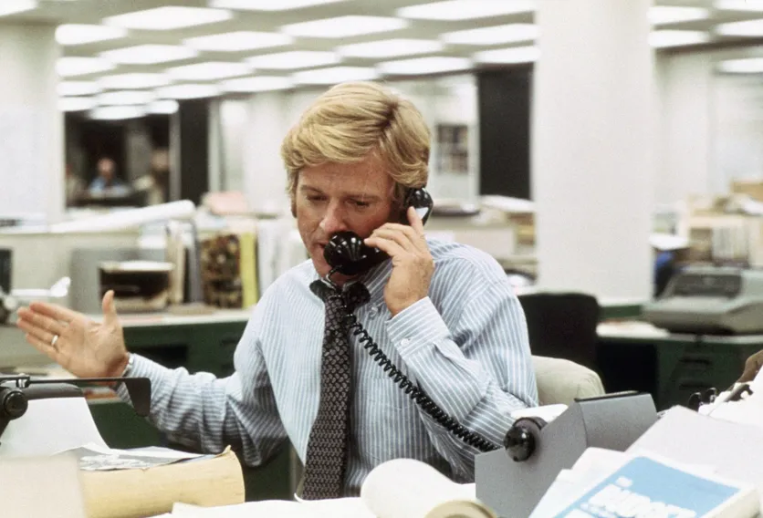
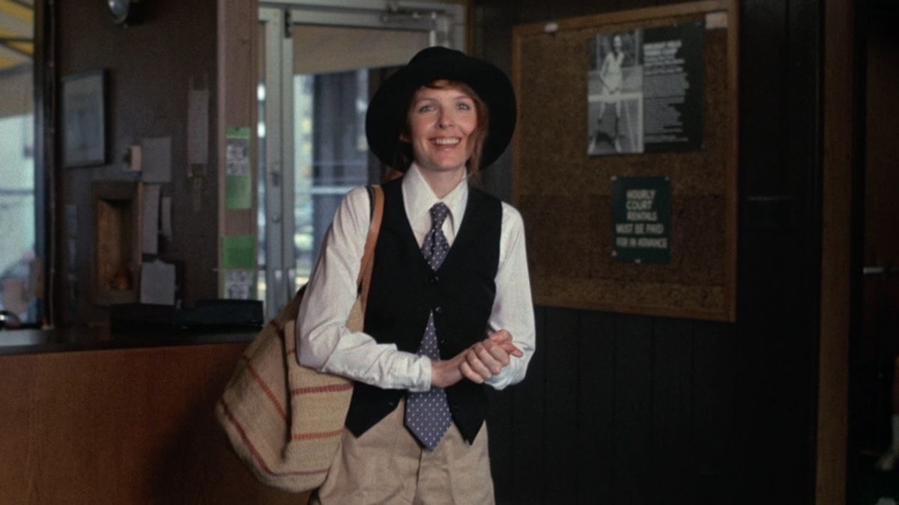
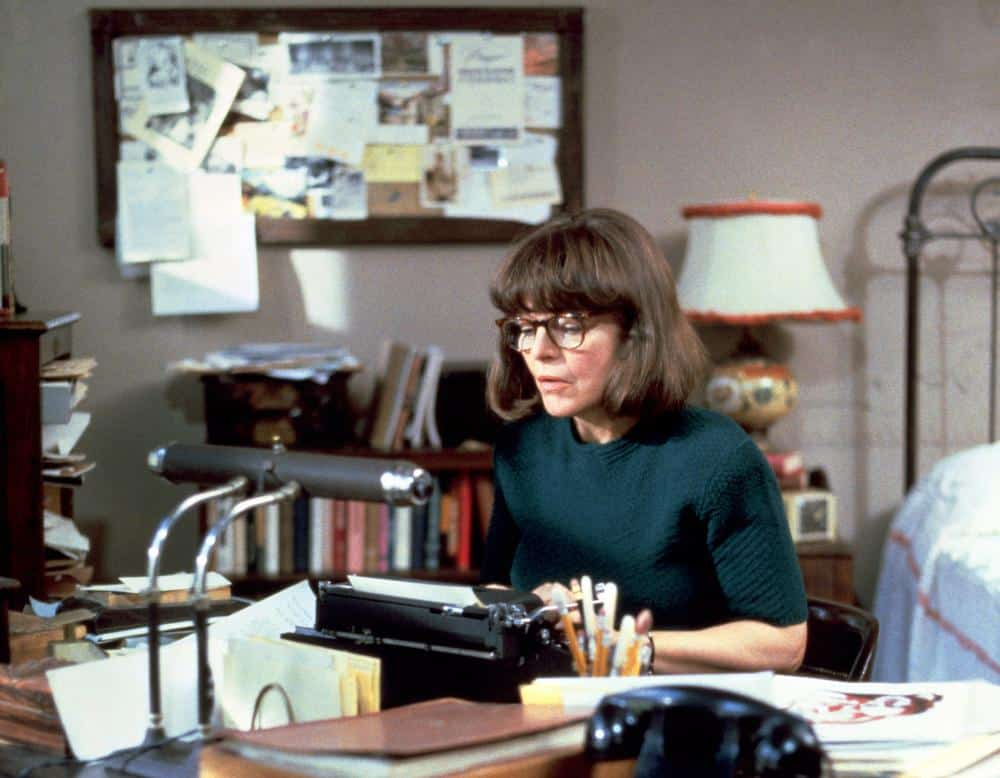

VIDA COTIDIANA · LA SOGA CULTURAL
CINE · LA SOGA CULTURAL

GASTRONOMÍA · OKAERI LAB
MODA E HISTORIA · SUBSTACK

MODA Y CINE · CELIA B · INSTAGRAM

MODA Y CINE · CELIA B · LINKEDIN

ARTE Y LETRAS · LA SOGA CULTURAL
BELLEZA · SUBSTACK